Lucky Signs
Established 1994 · Sign sales, design, estimates, lettering, displays, vehicle graphics, fabrication and finishing.

Illustration, signmaking, aircraft composites, fabrication and production. Many disciplines, one working life.


AT A GLANCE / THE WORKING LIFE
Illustration, business ownership, aerospace composites, production technology, teaching, motorsports and local-history storytelling have all shaped one working life. The illustrated chapters below show how those disciplines connect.
Read the illustrated storyMy career has moved between art and industry: from illustration and storefront lettering to industrial printing, advanced aircraft composites, custom vehicles, machinery and local-history research.
Across these fields, the same skills keep appearing: visual judgment, material knowledge and the discipline to carry an idea through to completion.
ILLUSTRATION / GRAPHIC COMMUNICATION / LETTERING
Before there is a sign, a printed image or a manufactured object, there is an idea of what it could become. Drawing, illustration, lettering and visual composition have been essential parts of my working life. I have worked across hand-made concepts and digital production artwork—always with the goal of making a message understandable at a glance.
Traditional graphic judgment remains important even when the equipment is sophisticated. Shape, balance, color and hierarchy determine whether the finished work actually communicates.
 ORIGINAL PRINT & PROMOTIONAL WORK
ORIGINAL PRINT & PROMOTIONAL WORK

Personal sketch studies and cartoon-development work. These drawings demonstrate line quality and the drawing process; familiar character studies are not presented as independently owned characters.
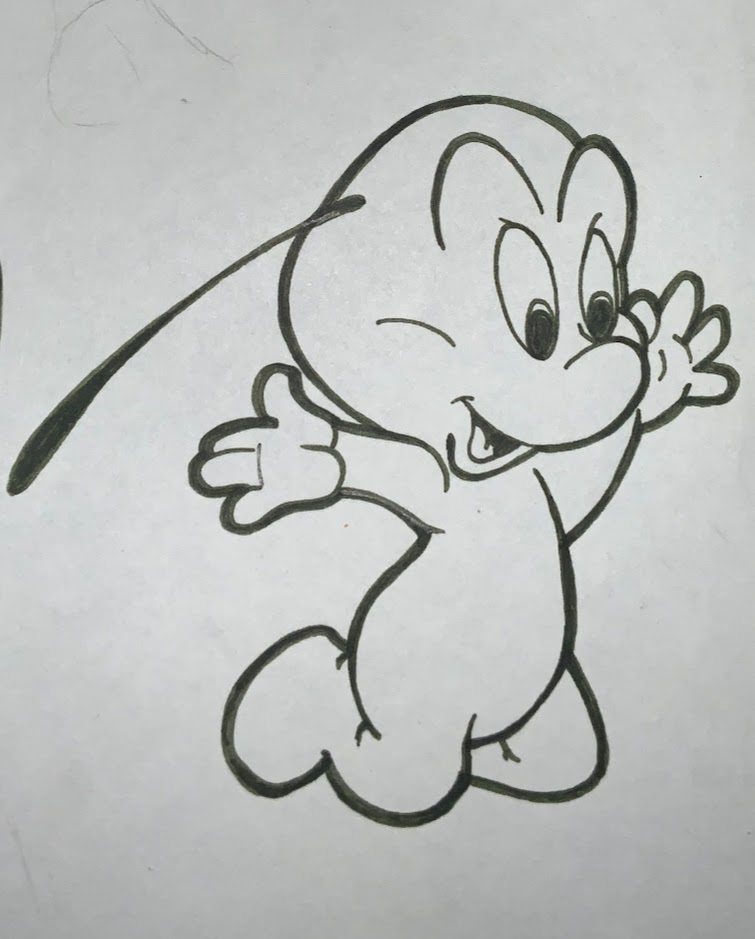
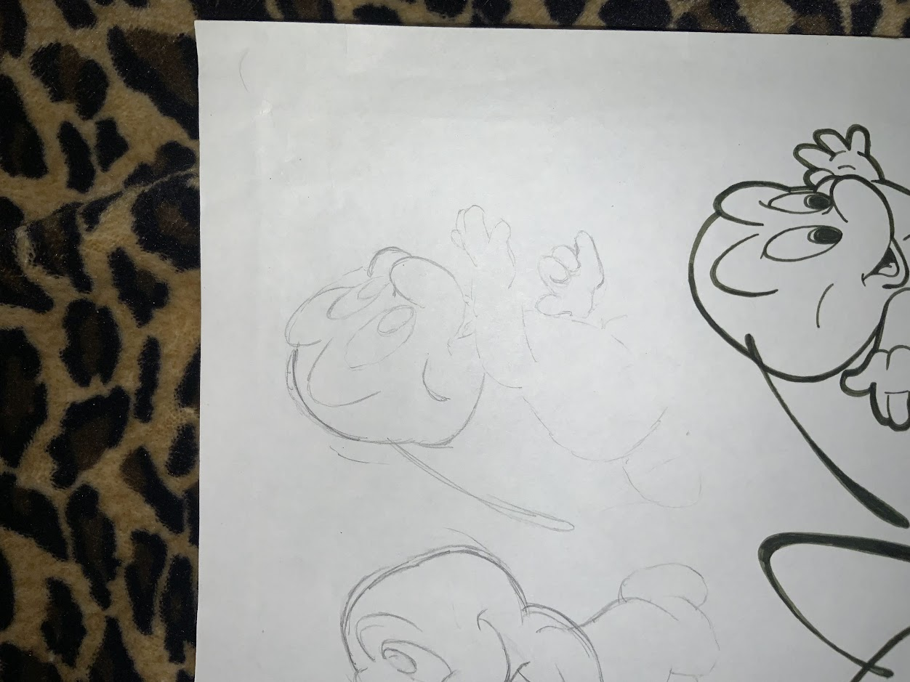
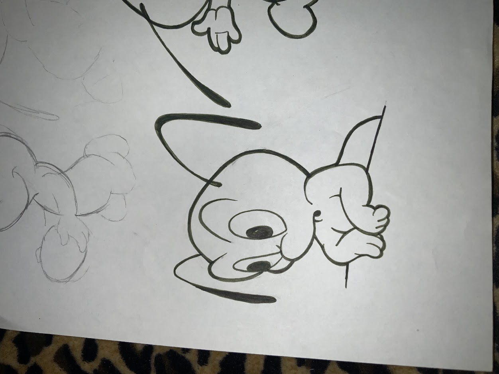
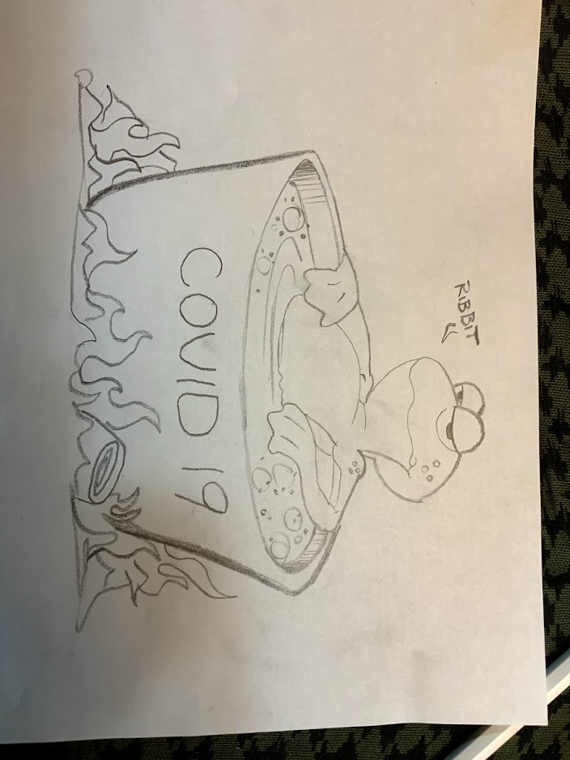
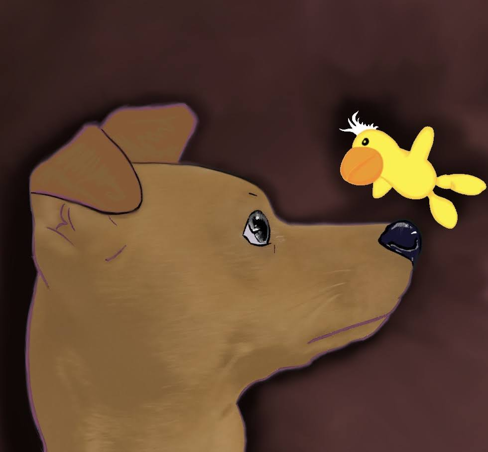
Character references and studies are shown as drawing practice, not as claims to ownership of recognizable characters.
LUCKY SIGNS / THAT STICKER AND SIGN STORE
I established Lucky Signs in 1994, bringing together sign sales, artwork, lettering, displays, vehicle graphics and hands-on production. The work required design judgment and the practical discipline of running a business: meeting customers, understanding their needs, choosing materials, estimating, making proofs and completing the job.
Beginning in 2008, I co-managed That Sticker and Sign Store with my wife and business partner. Through its years of regular commercial operation, our work covered building signs, storefront and window graphics, vehicle and fleet lettering, banners, printing and specialty applications. I handled many of the technical production, equipment, estimating and troubleshooting responsibilities while we shared business decisions and customer commitments.
That experience taught me to think beyond the initial design: the sign must fit its location, survive its environment, meet a deadline and serve the people who rely on it.
 DOCUMENTED SIGN-SHOP WORK
DOCUMENTED SIGN-SHOP WORK


BURKE GIBSON / SPEEDY SIGN-O-RAMA / ALL AMERICAN DECAL GUY
At Burke Gibson, a custom display and architectural-fixture manufacturer, I ran the screen-printing department and supervised a production team. Our work served precision-built retail displays, paint-chip and color-sample programs, and custom wood components for major commercial clients. The department handled large flatbed screen printing and production processes that included pad printing on wood sample pieces. I coordinated artwork, registration and color requirements, production workflow and print quality.
I also supported other departmental foremen and safety responsibilities. My work included helping set up a six-axis CNC router for display fabrication and training employees to use it. These were manufacturing-floor responsibilities supporting finished display systems—not a T-shirt-printing position.
Separately, I worked in sales and shop management at Speedy Sign-O-Rama. At All American Decal Guy I produced garment screen printing on a Riley Hopkins press and worked on customer graphics. Across these different shops, I developed hands-on experience with everything from large flatbed equipment and multi-station screen-printing carousels to smaller-scale production.


Large-format flatbed printing, screen preparation, and ink application—the processes behind precision graphics for custom retail displays and manufactured components.
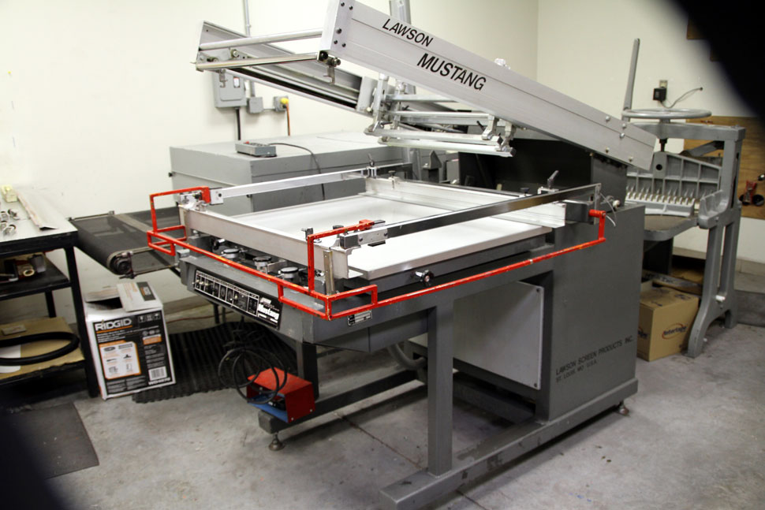
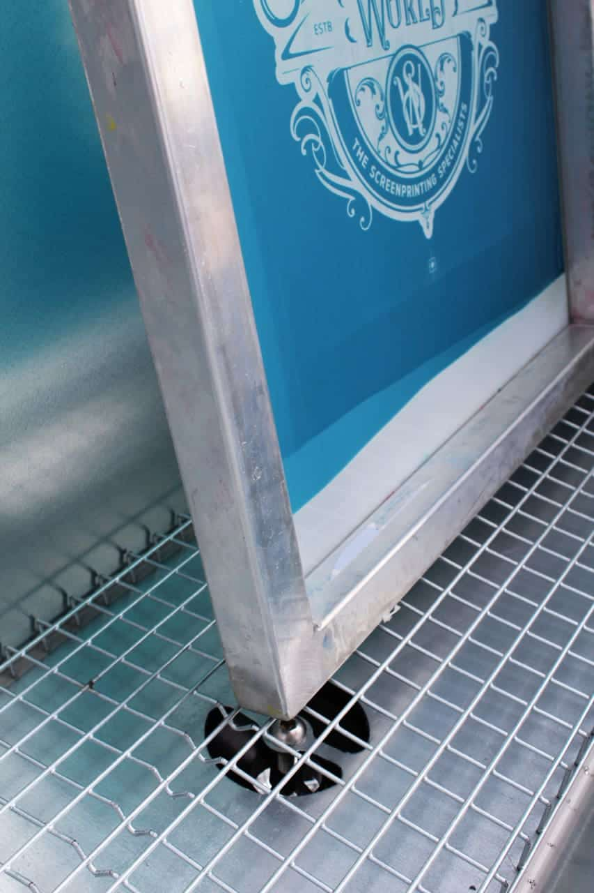
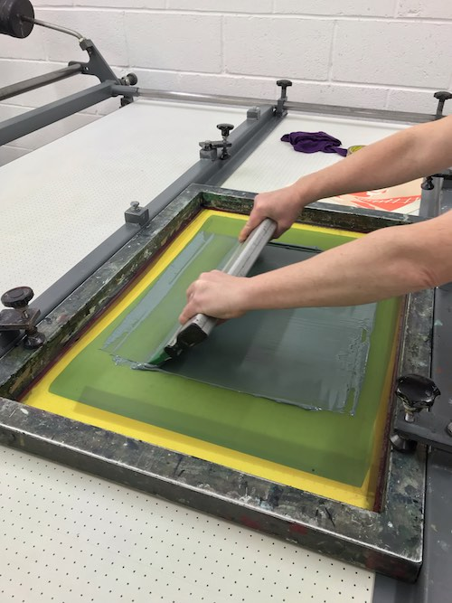
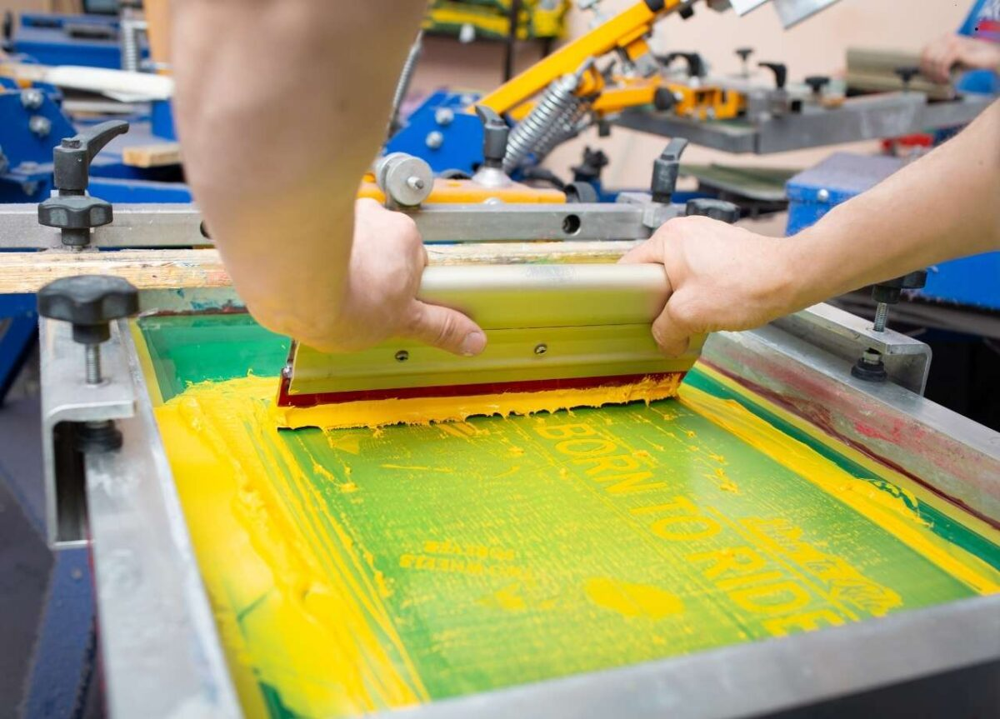
My Burke Gibson department focused on display components and color-sample production. Garment printing belongs to a different chapter of my career.
BOEING / ADVANCED COMPOSITES / PRECISION MANUFACTURING
In aerospace manufacturing, I worked as an advanced plastics/composites mechanic and assembler, including work on the B-2 program. Graphite-fiber materials and aircraft assembly require attention to technical instructions, material handling, workmanship and inspection expectations. I also supported tracking of employee technical qualifications and certification renewals.
My B-2 work was in advanced plastics and graphite-fiber composite assembly. It is a distinct chapter of my career from the exotic-metals, welding and nondestructive-inspection work described in the following section.
The B-2 program brought together advanced aircraft design, precision assembly and specialized composite materials—disciplines that shaped my manufacturing experience.
Advanced aircraft manufacturing, composite structures and precision assembly formed an important chapter in my career.
/B-2-lineup.webp)
My separate industrial experience includes exotic-metal forming and fabrication, including Inconel and titanium, TIG, MIG and arc welding, and nondestructive inspection. I previously held an FAA aircraft TIG-welding qualification; I do not present it as current. These photographs illustrate fluorescent penetrant testing and surface-indication analysis—not B-2 composite assembly or any specific employer job.


DESIGN SOFTWARE / MACHINES / COLOR / FABRICATION
A great deal of my work has involved keeping artwork and equipment in agreement. I have used Adobe Illustrator, Photoshop and FlexiDESIGN to develop vector files, layouts, proofs and production-ready graphics. RIP settings, ICC color profiles, output checks and material knowledge help turn a digital design into a finished physical product.
My production background spans Roland wide-format print/cut equipment, Summa thermal-resin systems, vinyl plotters, laminators, flatbed and carousel screen printing, CNC routing, and large-format CO₂ and fiber-laser equipment. I have maintained and troubleshot equipment, selected materials, managed production requirements, and trained people in shop processes.
My more recent specialty work includes UNINET white-toner transfer printing, fluorescent and conventional dye-sublimation applications, heat transfers with a Fusion IQ press, and graphics applied to garments, mugs, mouse pads and other products. I also combine sublimated artwork with cast acrylic, then cut or finish the material on a laser. My laser work extends to wood, stone and memorial products, as well as detailed metal marking with a MOPA fiber laser. On compatible metals such as stainless steel, laser settings can produce different surface colors through controlled marking and annealing effects; this is laser processing, not ink printing.
That range is grounded in traditional drawing, illustration and graphic design. I bring both the eye to develop artwork and the practical knowledge to choose a process, material and machine that can make it real.
ORIGINAL PRODUCTION PHOTOGRAPH

These are actual software screenshots, not simulated mockups. The FlexiSIGN views reveal contour nodes, Bézier handles and filled versus outlined artwork; the Illustrator view shows the same lettering examined in a second design environment.


Screenshots show legacy versions of both applications and demonstrate practical production-file experience, not claims to current-release proficiency. The signature is a working identity example; the approved portfolio monogram and champagne-gold signature remain unchanged.
From specialized print output to finishing: heat presses, transfer films, dye sublimation, and garment screen printing support a wide range of materials and finished products.

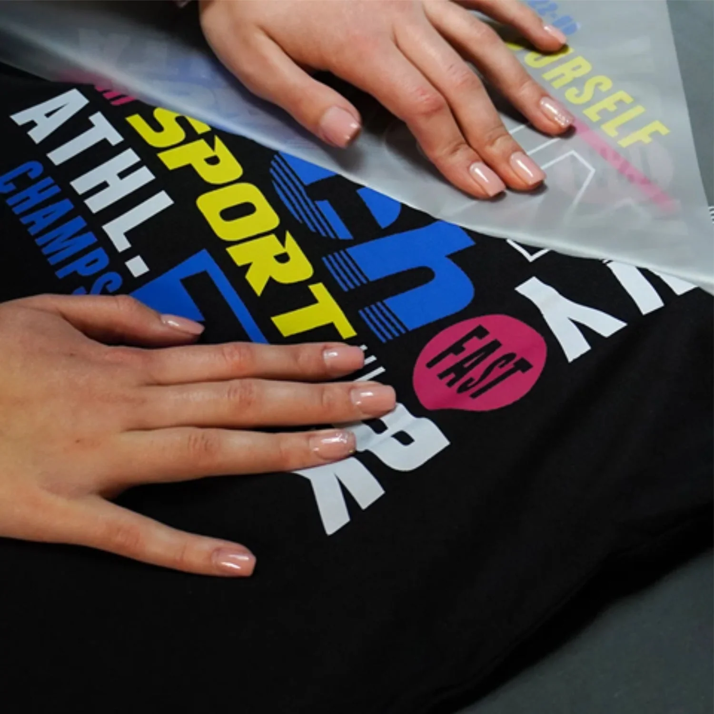
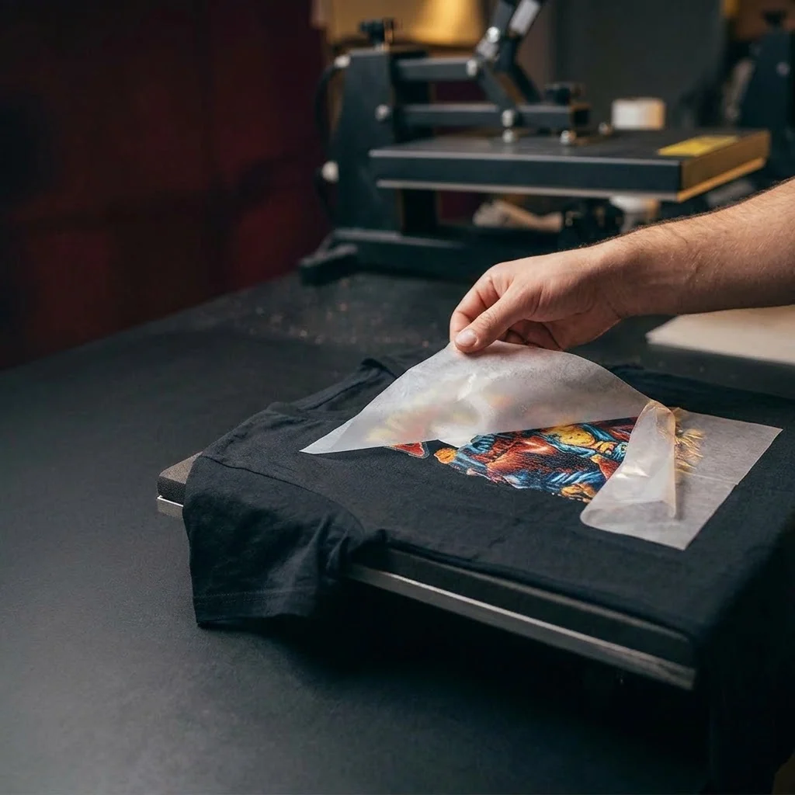

METROPOLITAN PARKS & RECREATION / TACOMA
I taught art and commercial design through Tacoma's Metropolitan Parks and Recreation programs for approximately five years. Working with people of different ages and experience levels meant turning ideas into clear, practical demonstrations.
Teaching strengthened my focus on observation, composition and clear communication—the same fundamentals I use when creating artwork for production.
HOT RODS / BODYWORK / RACING / GRAPHICS
Beyond my sign shops, I have worked with automotive restoration and customization—fiberglass, paint, body finishing, pinstriping, custom flames and graphics for cars and motorcycles. The same understanding of shape and surface that matters in commercial signage applies to the curves and materials of a vehicle.
I've competed in demolition derby, bump-to-pass, Thunder Car, figure-eight and short-track racing. Through my sign businesses, I also sponsored dozens of race cars. Racing gave me a participant's understanding of visibility, durability and the practical demands of graphics in motion.
The historical Lucky Signs racing photographs document a connection between my signmaking history and motorsports. The pictured race car is not identified here as a car I personally drove; the commercial vehicle projects elsewhere illustrate a different kind of work.
 HISTORICAL MOTORSPORTS / LUCKY SIGNS
HISTORICAL MOTORSPORTS / LUCKY SIGNS

COMPUTER / SATELLITE / NETWORK FIELD SERVICE
I have also worked in computer, satellite and network field service, installing hardware, configuring systems, connecting equipment and cables, diagnosing failures and helping restore operation in the field.
That kind of technical work teaches practical persistence: observe the problem, isolate its causes, work safely and solve it in the environment where it matters.
HISTORICAL RESEARCH / ARCHIVAL PHOTO CURATION / STORYTELLING
Another part of my creative life is researching, documenting and writing about the history of the communities around Puyallup and Tacoma. Old photographs, forgotten shops, landmarks and personal memories can reveal extraordinary stories about everyday places.
I research local sources, select and interpret historical photographs, and write stories for a public Facebook audience. The historical stories combine visual judgment, factual checking and clear writing; community responses can contribute additional memories and context that deserve verification.
A storefront sign is more than a business identifier. Years later, it can become a clue to the story of a neighborhood. That connection between making things visible and helping people remember them is one reason this portfolio exists.

A selection of historic photographs from my Tacoma and Puyallup research, chosen for the places, people, and memories they bring into view.

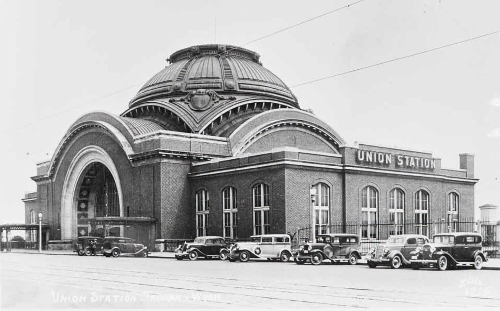
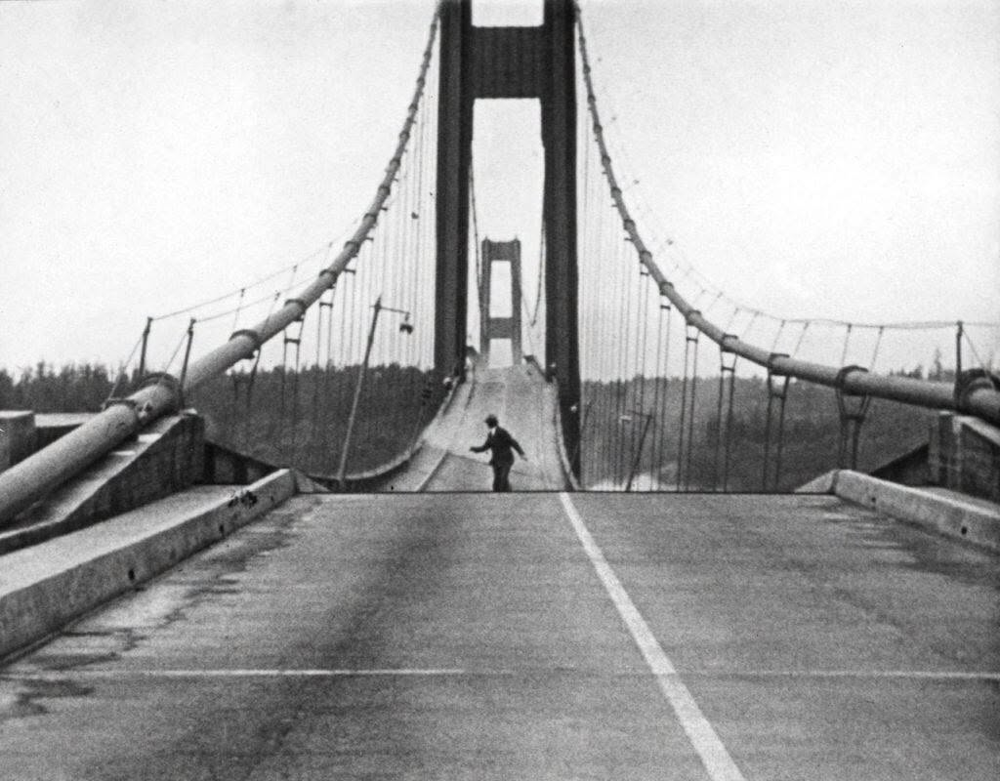
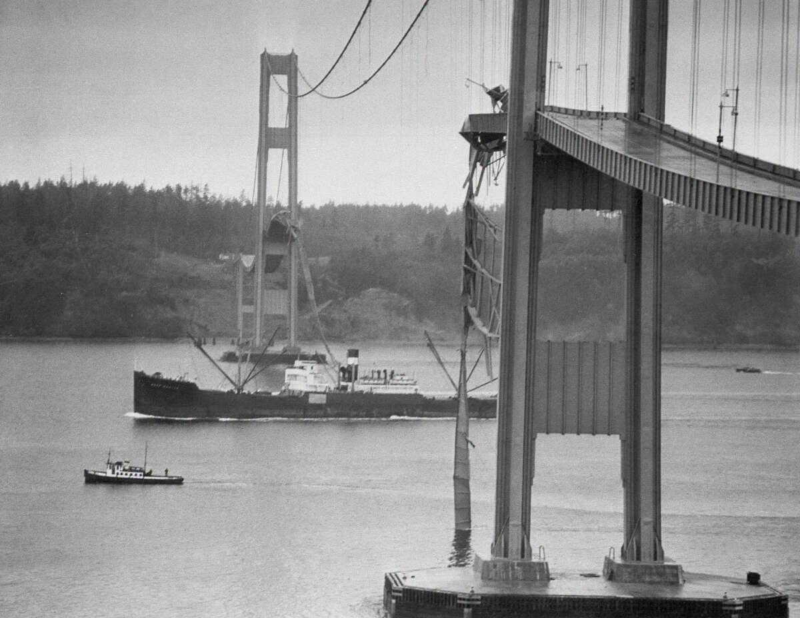
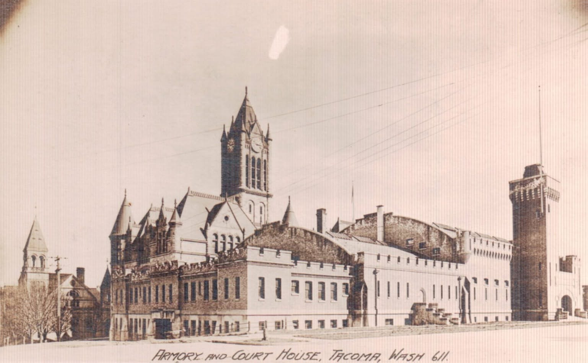
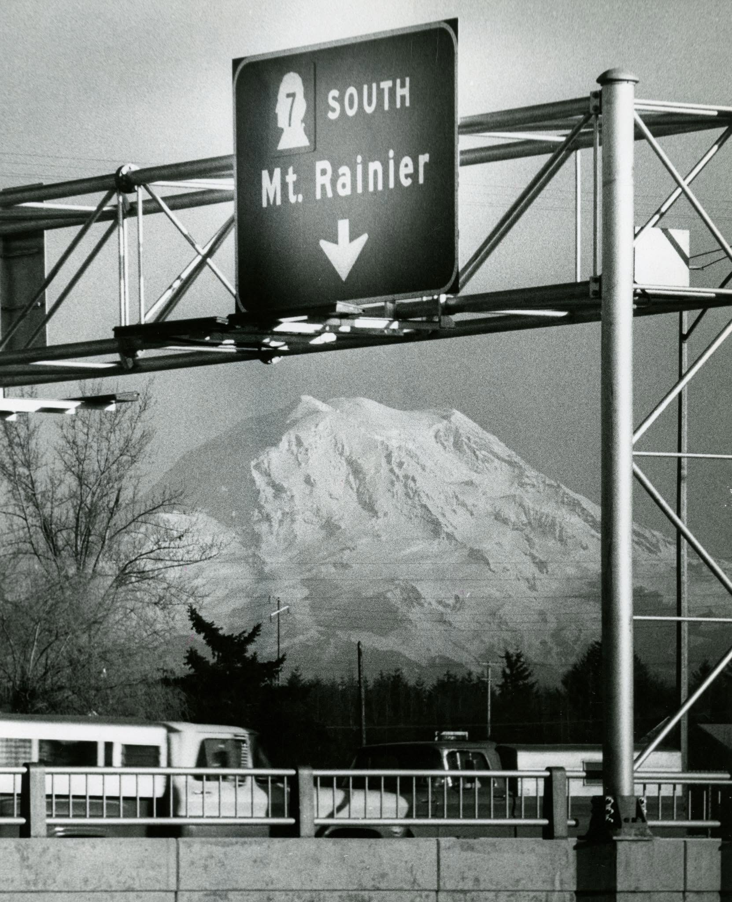
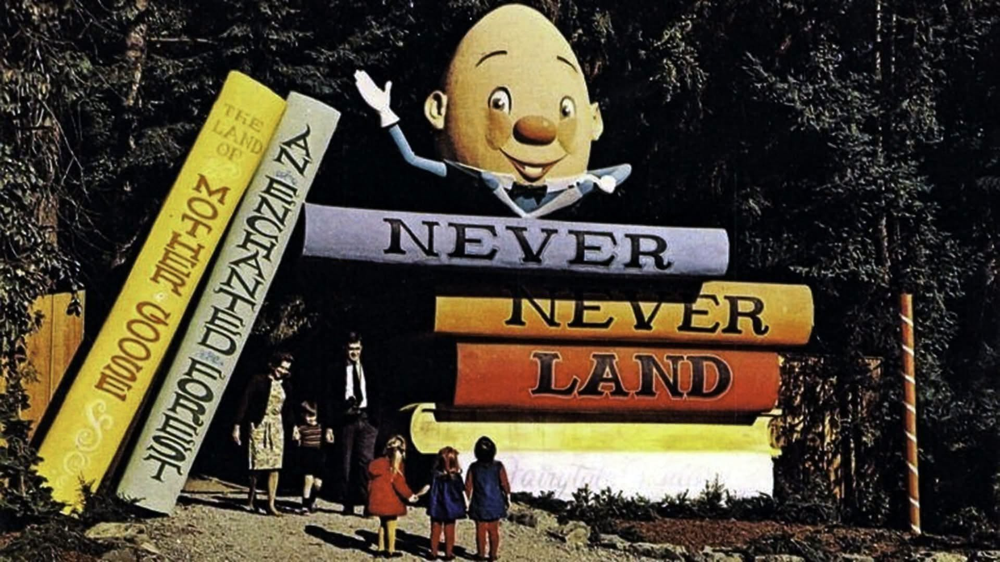

Archival images are part of my historical research and storytelling collection.
I see a lifetime spent asking how things are made, how they communicate and why they matter. Art and industry have always been connected in my work.
Completed signage, vehicle lettering and graphics photographed on real surfaces.
Design examples are identified as artwork or placement proofs rather than installed signs.
Equipment and workspaces document the practical side of bringing graphics into physical form.
For employers and readers who want the details, this section brings together roles, shop leadership, production skills and technical experience. Dates appear only where supported by existing career records.
Established 1994 · Sign sales, design, estimates, lettering, displays, vehicle graphics, fabrication and finishing.
Co-owner / operations and production · Regular commercial operations 2008–2025 · Technical production, customer consultation, job planning, equipment, staff training, suppliers and finishing.
Sales and shop management · Pricing, artwork, customer requests, shop workflow and delivery coordination.
Shop management and hands-on graphics production · Vehicle wraps, customer-artwork preparation, screen-printing and finishing.
Foreman in art, silkscreen and production · Automated screen-print operations, staff supervision, safety, color matching, CNC setup and training.
Advanced composite/plastics mechanic and assembler · Graphite-fiber composites, aircraft assembly and technical qualification records, including work on the B-2 program.
Metal forming and fabrication · Technical manufacturing and quality practices, welding-related operations and specialized materials.
Art and commercial-design instructor · Approximately five years of hands-on instruction in Tacoma.
Field installation, configuration, cable connections, hardware replacement and system troubleshooting.
Adobe Illustrator, Photoshop, FlexiDESIGN, vector/EPS production artwork, proofs, RIP configuration, ICC color management, Roland wide-format print-and-cut, Summa thermal-resin systems, screen printing, vinyl cutters, laminators, CO₂ and fiber lasers, CNC routing, materials and quality control.
Governor John R. Rogers High School diploma; Bates Technical College auto-body training; employer-provided composite-production training at Boeing; hands-on industrial manufacturing, equipment and safety instruction. Earlier FAA aircraft TIG-welding qualification is historical, not current.
This is a public professional history, not an employment application or a downloadable résumé. The selected experience and capabilities connect creative judgment with practical production.
CAPABILITIES BUILT OVER A CAREER
Illustration, vector artwork, production proofs, Adobe Illustrator, Photoshop and FlexiDESIGN; 3D modeling, STL development and adaptable design-to-fabrication software workflows.
Roland wide-format print-and-cut, RIP settings and ICC color management, material-specific output checks, vinyl plotting, screen printing, toner transfers, heat presses, dye sublimation, laminating and promotional products.
B-2 program composite assembly; advanced plastics and graphite-fiber materials; separate exotic-metal fabrication and welding experience with Inconel, titanium, MIG, TIG and arc. Former FAA aircraft TIG qualification (not current).
Experience operating mills, jointers, CNC and other shop machinery; laser cutting/engraving and larger-format filament and resin 3D-printing equipment.
Hot-rod shops, automobile restoration, fiberglass, painting, finishing, pinstriping, custom flames, motorcycle and automotive decals and wraps.
Estimating, customer consultation, purchasing, training, shop leadership, production troubleshooting, quality and scheduling.
A LIFE OF WORK / A STORY STILL UNFOLDINGTHE WIDER BODY OF WORK
The photographic collection connects finished graphics with the equipment, workshop environments and career experiences behind them.
SIGN BUSINESS / HISTORICAL PHOTOGRAPHY
Storefront photographs, shop activity, equipment views, and a business-history website graphic, arranged as a concise visual chapter.